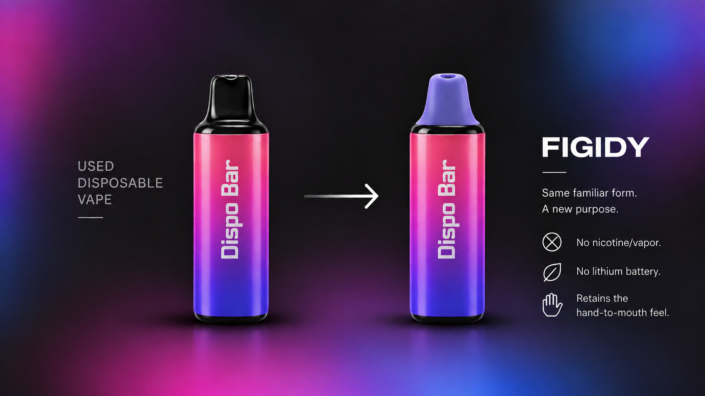

A nicotine-free, vapor-free alternative designed to replace the physical hand-to-mouth habit of vaping.
Figidy is a nicotine-free, vapor-free alternative designed to preserve the familiar hand-to-mouth and oral experience of vaping—without nicotine or vapor.
Vaping is more than nicotine. For many users, the habit is also tied to the physical hand-to-mouth and oral fixation of vaping. At the same time, disposable vapes create a difficult recycling problem because their plastic, metal, and batteries are combined into a single device. Figidy addresses both problems by giving the used vape body a secondary purpose while removing the electronics and battery and adding a mouthpiece designed for the hand-to-mouth and oral habit.
Be the first to know when Figidy is ready.
Savannah Knowles - Savannah.Knowles@colorado.edu
Octavia Pagliotti - Octavia.Pagliotti@colorado.edu
Cameron Buzzell - Cameron.Buzzell@colorado.edu
Hailey Anderson - Hailey.Anderson@colorado.edu
Corrine Rosecrans - Corrine.Rosecrans@colorado.edu